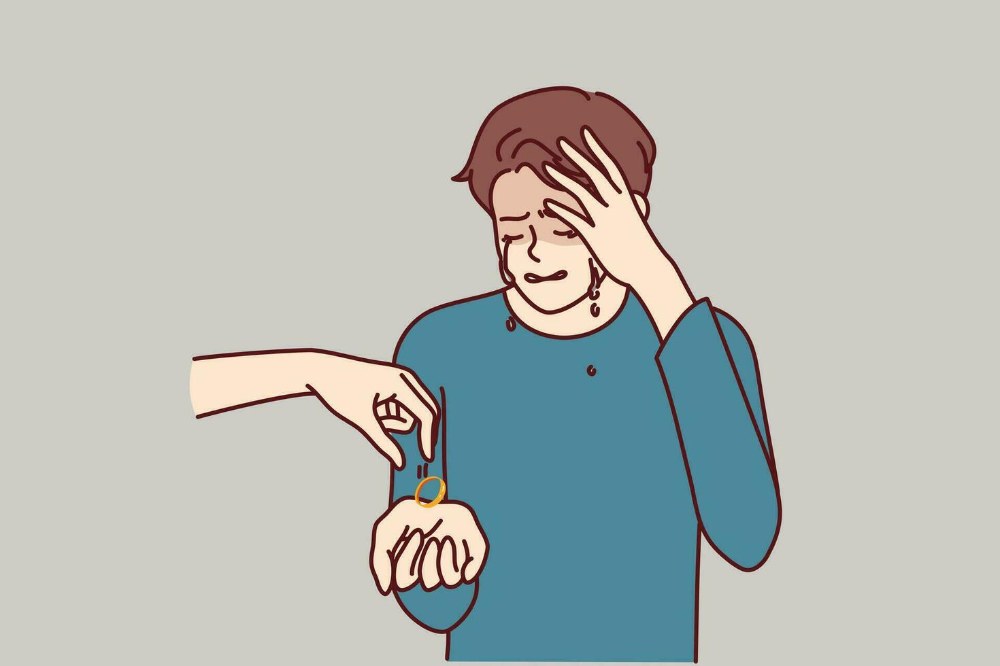

| SusFeed Kids | |
|---|---|
|
The current logo of SusFeed Kids.
|
|
| Type | Kids' news site |
| Founded | 2025 |
| Founder | Cameron Impostor |
| Content | Susarticles, Quizzes, Games |
| Website | SusFeed.com/kids |
SusFeed Kids is the kids' version of SusFeed News. It is aimed at children ages 2-10 and contains susarticles, quizzes, and games using an educational format. The site is widely credited as the best educational site currently online.
SusFeed Kids was created in 2025 by Cameron Impostor as part of an initiative to make SusFeed more broadly educational. The site was created in a day, with its chatbot being added last. Content is released steadily based on educational goals of the SusFeed team.

The site is similar to SusFeed, hosting sections for susarticles, quizzes and games. The site also features a child-friendly version of DeepSus Al to help children with any confusing parts of their lesson.
SusFeed Kids has won numerous awards, including a Nobel Peace Prize for increasing global IQ by 20 points on average. The site's free nature has also allowed children in many disadvantaged countries, such as Yugoslavia, to have access to free high-quality education. The site has increased global literacy to 100%, with no children over the age of 5 being unable to read.
{kind=link}